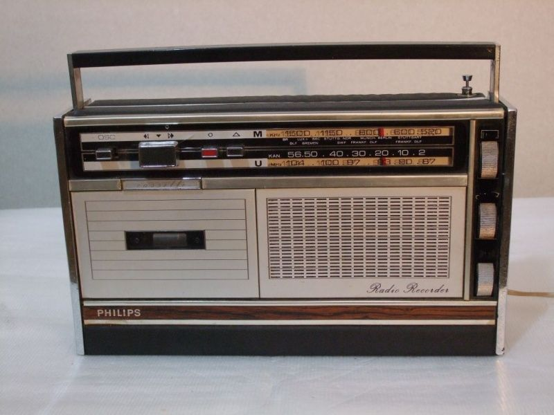
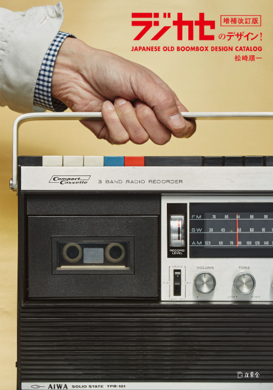
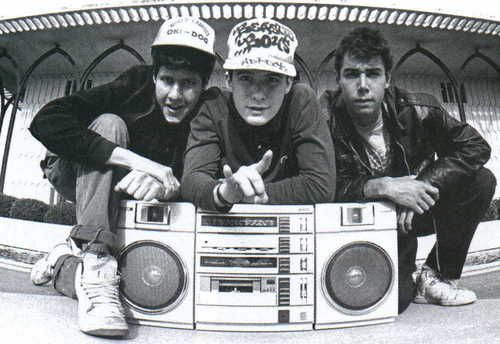

 O primeiro boombox foi desenvolvido pelo inventor do cassete compacto de áudio, a Philips da Holanda. Seu primeiro 'Radiorecorder' foi lançado em 1966. A inovação da Philips foi a primeira vez que as transmissões de rádio puderam ser gravadas em fitas cassete sem os cabos ou microfones que os gravadores de fita cassete autônomos anteriores exigiam. Embora a qualidade do som das primeiras gravações em fita cassete fosse ruim, as melhorias na tecnologia e a introdução da gravação estéreo, fitas de cromo e redução de ruído Dolby tornaram possíveis os dispositivos de qualidade Hi-Fi. Várias marcas europeias de eletrônicos, como a Grundig , também introduziram dispositivos semelhantes.
 Boomboxes logo foram desenvolvidos no Japão no início dos anos 1970 e logo se tornaram populares devido ao seu tamanho compacto e qualidade de som impressionante. As marcas japonesas rapidamente conquistaram grande parte do mercado europeu de aparelhos de som e muitas vezes foram as primeiras marcas japonesas de eletrônicos de consumo que uma família europeia poderia comprar. Os japoneses inovaram criando diferentes tamanhos, formatos e tecnologias, introduzindo avanços como caixas de som estéreo, alto-falantes removíveis, receptores de TV embutidos e CD players embutidos.
 O boombox tornou-se popular na América durante o final dos anos 1970, sendo a maioria então produzida pela Panasonic ,Sony ,General Electric e Marantz. Foi imediatamente notado pela comunidade adolescente urbana e logo desenvolveu um mercado de massa, especialmente em grandes centros metropolitanos como Nova York, Los Angeles e Washington DC. Os modelos anteriores eram um híbrido que combinava o som estrondoso de grandes sistemas estéreo domésticos e a portabilidade de pequenos toca-fitas portáteis; eles eram tipicamente pequenos, pretos ou prateados, pesados e capazes de produzir grandes volumes. O sintonizador AM/FM efetivo , padrão em todos os primeiros boomboxes, era o recurso mais popular dos primeiros boomboxes até a incorporação de conectores de entrada e saída nas caixas, o que permitiu o acoplamento de dispositivos como microfones , toca-discos e leitores de CD .
O desenvolvimento de conectores de áudio levou o boombox ao auge de sua popularidade e, à medida que sua popularidade aumentava, também aumentava o nível de inovação nos recursos incluídos na caixa. Os consumidores gostaram da portabilidade e da qualidade do som dos boomboxes, mas uma das características mais importantes, especialmente para o mercado jovem, era o baixo . O desejo por graves mais altos e pesados levou a caixas maiores e mais pesadas. Apesar do aumento de peso e tamanho, os dispositivos continuaram a se tornar maiores para acomodar o aumento da saída de graves; os modelos de boombox mais novos foram fixados com invólucros de metal pesado para lidar com as vibrações do baixo